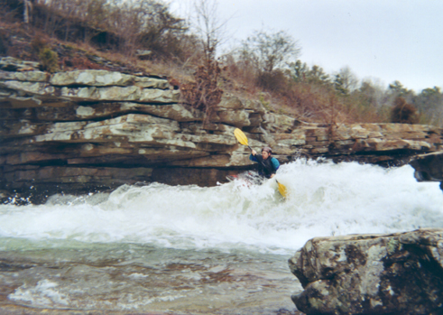
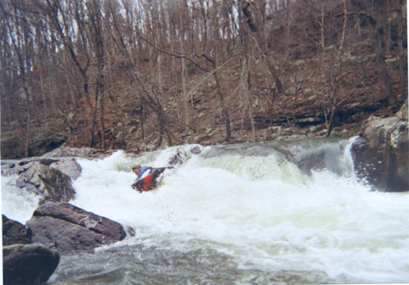
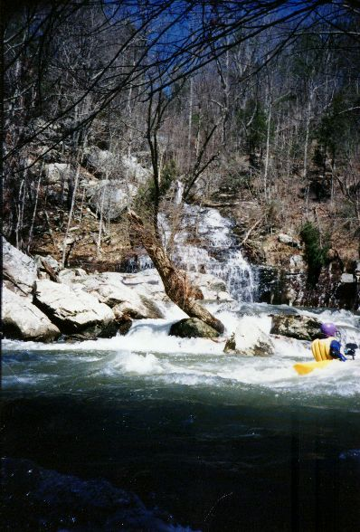
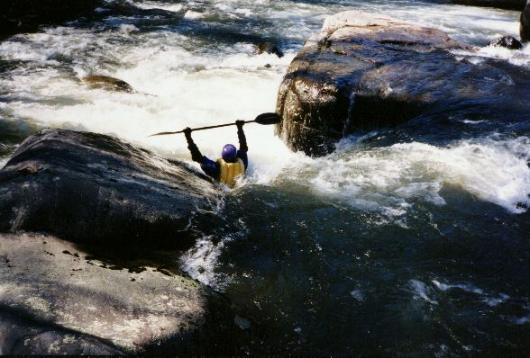
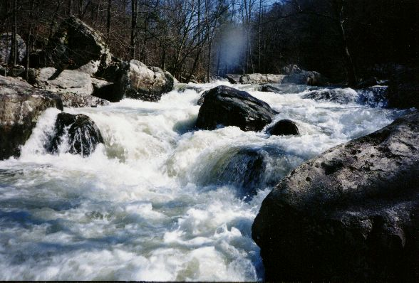
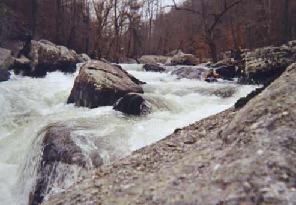
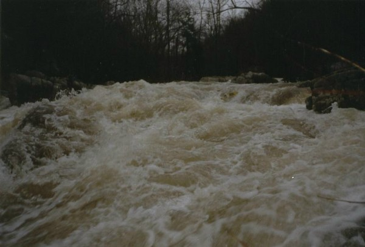
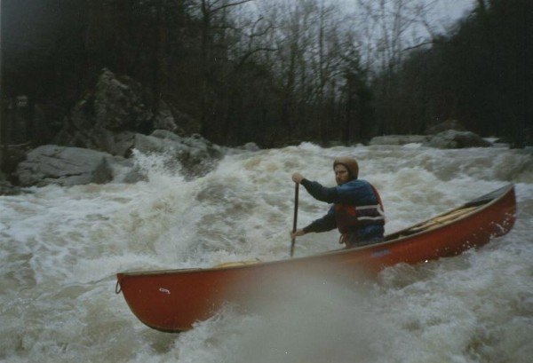

Scarham Creek
|  | Chris V. on the put-in slide on Shoal into Scarham photo courtesy J.C. Goodwin |
|  | Chris V. biting it at Munch Stop. The rock on the bottom left
of this picture can pin if you wash down the chute and there is a powerful hole beside the undercut boulder. (200
cfs on the Scarham gage) photo courtesy J.C. Goodwin |
|  | Jim Dowdy surfing across from a pretty waterfall coming into Scarham |
|  | Jim Dowdy goes deep in the last slot above the Confluence Rapid. |
|  | The confluence rapid, Terminator. And a water spot on the lens. Reasonable water level. |
|  | Terminator rapid |
|  | Terminator at high water on February 23, 1991. If you look closely,
you will see Mark Cumnock's kayak paddle blade at the crux hole. (Photo courtesy Mark Cumnock) |
|  | Jeff Richards towards the bottom of Terminator on February 23,
1991. (Photo courtesy Mark Cumnock) |